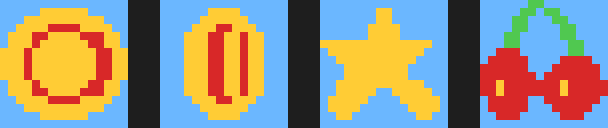
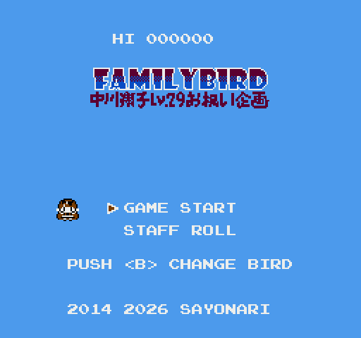
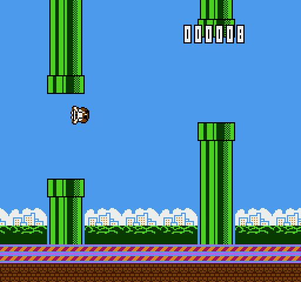

A ボタン（羽ばたき）だけのかんたん操作！ マリオ風の土管にぶつからないように，どこまでも飛び続けよう． 土管を1本くぐるたびに +1点．スコア10をこえると上下に動く土管があらわれ， スコア30・70でスピードアップ！ 10点ごとに空の色が昼→夕焼け→夜とうつりかわる．
BGMは熱血ロック・キラキラアイドル・かわいいポップ・勇者マーチ・夜ふかしスウィングの 5曲から毎回ランダムで流れる（すべてオリジナル曲）． ⭐スターを取ると無敵専用曲に切り替わるぞ！ プレイ中にSTARTでポーズ．
羽ばたくたびに星がパッと飛び散り，ハイスコア更新中はスコアが金色に光る． 10点の節目にはファンファーレが鳴る！
| X / SPACE / ↑クリック | Aボタン（羽ばたき・決定） |
| Z | Bボタン（キャラチェンジ！5人から選べる） |
| ENTER | START（ゲーム開始） |
| SHIFT / ↑↓ | SELECT（メニュー選択） |
ゲーム画面をクリック／タップしても羽ばたけます．ゲームパッドにも対応．
キャラクターごとに飛びかたがちがう！ Bボタンで5人を切りかえて，お気に入りの一羽を見つけよう （ふわふわ系から鋭い羽ばたき系まで）．ゲームオーバー画面ではスコアに応じて BRONZE / SILVER / GOLD メダルと NEW RECORD が表示される．

| 🪙 コイン | +5点 |
| ⭐ スター | むてき！ 点滅しながら土管を貫通できる |
| 🍒 チェリー | +20点 |


2014年にファミコン実機用に開発した自作ゲーム FamilyBird（アセンブリ製）を， 2026年にクリーン再実装したものです．音楽は自作5chサウンドドライバ「SAYODRV」＋ DPCMサンプリング打楽器（キック・タム・スネア）による全9曲のオリジナル楽曲です． ブラウザ上では jsnes（MITライセンス）でNES ROMをそのまま実行しています．
原案: Flappy Bird (Dong Nguyen) ／ 開発: sayonari ＆ Claude ／ Special Thanks: 中川翔子さん
非商用のファンメイド作品です．